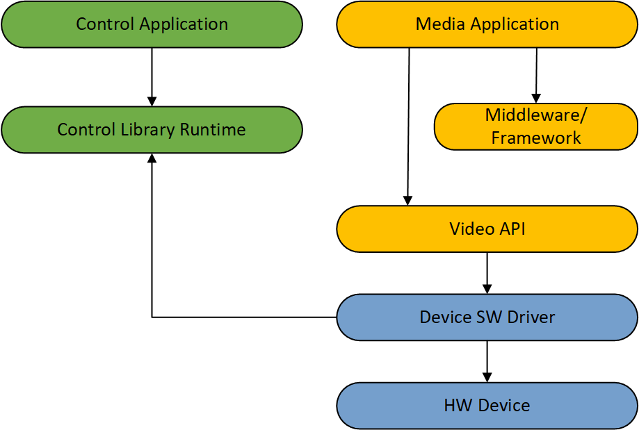

Media Programming Guide
Introduction
The media functions exposed by the Control Library provide the ability to query and control media related functionality of the SW driver of the accelerator device.
Currently video post processing feature controls are exposed.
Video post processing color feature controls, such as color controls and skin tone enhancement.
Video post processing quality feature controls, such as noise reduction, sharpness and contrast enhancement.
List of features supported are ctl_video_processing_feature_t.
Features controls are per adpater (WIP), persistent across reboots and apply to all applications that invoke the appropriate video processing interface the device and operating system supports.
Refer to code samples for example code snippets of various API’s.
Check Media Support
The application should initialize the IGCL library using the common initialization functions as described in the previous Initialization section.
Function |
Description |
|---|---|
ctlInit() |
Initialize the control library with app’s version |
Determine device adapters availabe |
|
Get device adapter properties including the subfunctions supported such as media, display etc. |
The pseudo code below shows how to check to see if a specific device supports media subfunction:
ctl_device_adapter_properties_t StDeviceAdapterProperties StDeviceAdapterProperties.Size = sizeof(ctl_device_adapter_properties_t) StDeviceAdapterProperties.pDeviceID = malloc(sizeof(LUID)); StDeviceAdapterProperties.device_id_size = sizeof(LUID); ctlGetDeviceProperties(hDevices[Index], &StDeviceAdapterProperties); if (StDeviceAdapterProperties.supported_subfunction_flags & CTL_SUPPORTED_FUNCTIONS_FLAG_MEDIA) output("media subfunction supportedn") # Control media features free_memory(...)
Query Supported Capabilities
The application can then query the video processing capabilities supported.
Function |
Description |
|---|---|
Query the supported video processing capabilities |
The query to ctlGetSupportedVideoProcessingCapabilities() with pSupportedFeatures null will return the number of supported features in NumSupportedFeatures. The query with memory allocated for pFeatureDetails and NumSupportedFeatures indicating the number of elements in the feature array will return the supported features and details such as default value and range information.
Each feature will be described by a ctl_property_value_type_t ValueType. This will indicate what values will be used to control the feature in the ctl_property_info_t Value union.
ctl_video_processing_feature_caps_t FeatureCapsVideoProc FeatureCapsVideoProc.Size = sizeof(ctl_video_processing_feature_caps_t) # If FeatureCapsVideoProc.pSupportedFeatures is null pointer, API will return the number of supported features. ctlGetSupportedVideoProcessingCapabilities(hDAhandle, &FeatureCapsVideoProc) # If FeatureCapsVideoProc.pSupportedFeatures is not null pointer, API will return supported features. FeatureCapsVideoProc.pFeatureDetails = (ctl_video_processing_feature_details_t *)malloc(sizeof(ctl_video_processing_feature_details_t) * FeatureCapsVideoProc.NumSupportedFeatures); ctlGetSupportedVideoProcessingCapabilities(hDAhandle, &FeatureCapsVideoProc); for (index = 0 .. FeatureCapsVideoProc.NumSupportedFeatures-1) # Get more feature details of the capability such as mode, max/min value ctl_video_processing_feature_details_t *pFeatureVideoProcDetails = FeatureCapsVideoProc.pFeatureDetails + index; if (pFeatureVideoProcDetails->FeatureType == CTL_VIDEO_PROCESSING_FEATURE_FILM_MODE_DETECTION) # Film Mode Detection Supported, FMD mode is Bool if (pFeatureVideoProcDetails->ValueType == CTL_PROPERTY_VALUE_TYPE_BOOL) output("CTL_VIDEO_PROCESSING_FEATURE_FILM_MODE_DETECTION is supported, default value is %d.n", pFeatureDetails->Value.BoolType.DefaultState); # Control FMD free_memory(...)
Get and Set Features
Each video processing feature control parameters can be queried or set using the bSet toggle of ctlGetSetVideoProcessingFeature().
Function |
Description |
|---|---|
Get or Set Video Processing feature details for a specific feature |
# Set the FMD feature ctl_video_processing_feature_getset_t FeatureSetDetails FeatureSetDetails.FeatureType = CTL_VIDEO_PROCESSING_FEATURE_FILM_MODE_DETECTION FeatureSetDetails.bSet = true FeatureSetDetails.ValueType = CTL_PROPERTY_VALUE_TYPE_BOOL FeatureSetDetails.Value.BoolType.Enable = true ctlGetSetVideoProcessingFeature(hDAhandle, &FeatureSetDetails) # Get the currently set FMD feature ctl_video_processing_feature_getset_t FeatureGetDetails FeatureGetDetails.FeatureType = CTL_VIDEO_PROCESSING_FEATURE_FILM_MODE_DETECTION FeatureGetDetails.bSet = false FeatureGetDetails.ValueType = CTL_PROPERTY_VALUE_TYPE_BOOL ctlGetSetVideoProcessingFeature(hDAhandle, &FeatureGetDetails)
Use of Custom Structs
Some features such as CTL_VIDEO_PROCESSING_FEATURE_STANDARD_COLOR_CORRECTION use a custom structure for control parameters. This is indicated by the ValueType returned from ctlGetSupportedVideoProcessingCapabilities() being CTL_PROPERTY_VALUE_TYPE_CUSTOM.
Custom Query
In this case, the feature will have a custom query structure defined. For CTL_VIDEO_PROCESSING_FEATURE_STANDARD_COLOR_CORRECTION this is ctl_video_processing_standard_color_correction_info_t and it will be used to return the feature control parameters. The application must query one more time ctlGetSupportedVideoProcessingCapabilities() specifying the FeatureType that uses a custom ValueType and allocating enough memory for pCustomValue to hold the custom structure.
ctl_video_processing_feature_caps_t SCCCaps ctl_video_processing_feature_details_t SCCCapsDetails // Caps query for Standard Color Control SCCCapsDetails.FeatureType = CTL_VIDEO_PROCESSING_FEATURE_STANDARD_COLOR_CORRECTION SCCCapsDetails.pCustomValue = (void *)malloc(sizeof(ctl_video_processing_standard_color_correction_info_t)) SCCCapsDetails.CustomValueSize = sizeof(ctl_video_processing_standard_color_correction_info_t) SCCCaps.NumSupportedFeatures = 1; SCCCaps.pFeatureDetails = &SCCCapsDetails; // Query SCC Specific Caps ctlGetSupportedVideoProcessingCapabilities(hDAhandle, &SCCCaps) free_memory(...)
Custom Get and Set
There will also be a custom get/set structure defined. For CTL_VIDEO_PROCESSING_FEATURE_STANDARD_COLOR_CORRECTION this is ctl_video_processing_standard_color_correction_t. The application can then use this custom structure to get/set the feature control parameters ctlGetSetVideoProcessingFeature(), allocating enough memory for pCustomValue to hold the custom structure.
# Set the SCC feature ctl_video_processing_feature_getset_t FeatureSetDetails FeatureSetDetails.FeatureType = CTL_VIDEO_PROCESSING_FEATURE_STANDARD_COLOR_CORRECTION FeatureSetDetails.bSet = true FeatureSetDetails.ValueType = CTL_PROPERTY_VALUE_TYPE_CUSTOM FeatureSetDetails.CustomValueSize = sizeof(ctl_video_processing_standard_color_correction_t) FeatureSetDetails.pCustomValue = malloc(FeatureSetDetails.CustomValueSize) ctl_video_processing_standard_color_correction_t *pCustomValueSet = (ctl_video_processing_standard_color_correction_t *)FeatureSetDetails.pCustomValue ctl_video_processing_standard_color_correction_info_t *pCaps = (ctl_video_processing_standard_color_correction_info_t *)SCCCapsDetails.pCustomValue pCustomValueSet->standard_color_correction_enable = true # Check if Brightness is in the range of [min, max], then set new value. if (Brightness <= pCaps->brightness.RangeInfo.max_possible_value && Brightness >= pCaps->brightness.RangeInfo.min_possible_value) pCustomValueSet->brightness = Brightness else pCustomValueSet->brightness = pCaps->brightness.RangeInfo.default_value # Similarly check and set Contrast, Hue, Saturation values. # Set SCC Feature ctlGetSetVideoProcessingFeature(hDAhandle, &FeatureSetDetails); # Get the currently set SCC feature ctl_video_processing_feature_getset_t FeatureGetDetails FeatureGetDetails.FeatureType = CTL_VIDEO_PROCESSING_FEATURE_STANDARD_COLOR_CORRECTION; FeatureGetDetails.bSet = false; FeatureGetDetails.ValueType = CTL_PROPERTY_VALUE_TYPE_CUSTOM; FeatureGetDetails.CustomValueSize = sizeof(ctl_video_processing_standard_color_correction_t); FeatureGetDetails.pCustomValue = malloc(FeatureGetDetails.CustomValueSize); ctlGetSetVideoProcessingFeature(hDAhandle, &FeatureGetDetails); free_memory(...)